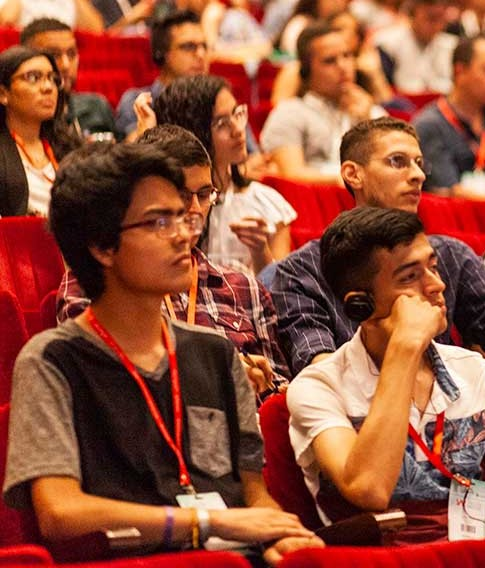
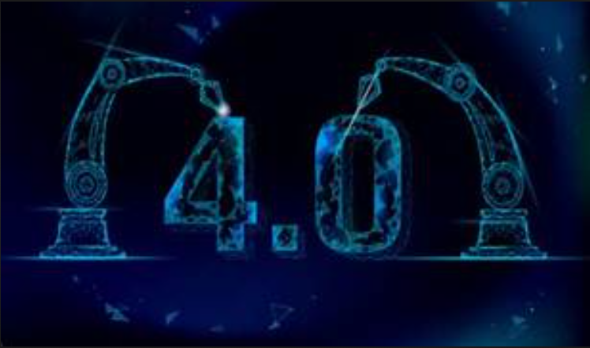
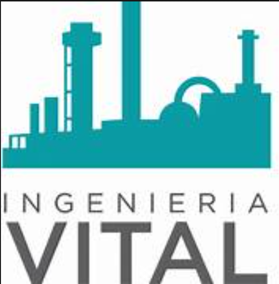

¿Que es?

El Congreso Académico Internacional reunirá científicos, académicos, estudiantes, ingenieros y profesionales
relacionados con la ingeniería para conocer y discutir los últimos avances de esta disciplina a nivel mundial.
Este evento será organizado por la Facultad de Ingeniería de la Universidad internacional la rioja y contará con la participación
de importantes conferencistas nacionales e internacionales alrededor de dos ejes temáticos:
ingeniería vital y tecnologías 4.0.
Los interesados podrán enviar sus artículos para ser divulgados en las modalidades de presentación oral –de manera
presencial o virtual– o en póster. Esta es una oportunidad única para reunir a la comunidad científica, académica,
gubernamental y del sector industrial que están interesados en conocer los avances y las perspectivas de la ingeniería
a nivel mundial, presentar resultados, intercambiar ideas y establecer relaciones de valor con sus pares para futuras
colaboraciones.
Tecnologia 4.0

No hay espacio conocido de las actividades humanas donde las tecnologías 4.0 no tengan injerencia y no lo hayan tocado y
afectado de manera positiva o negativa. Este encuentro en el Congreso Internacional EXPOIngeniería 2022 nos ayudará
a acercarnos a ese futuro que se prevé lleno de retos, en el que la ingeniería tendrá la obligación de ayudar a que
la sociedad sea capaz de asimilar de manera provechosa y sostenible la vida de todos los habitantes.
Ingenieria Vital

La ingeniería para la vida busca ofrecer las condiciones biofísicas que hagan posible armonizar la vida en nuestro planeta
con los procesos productivos y el desarrollo sostenible. A su vez, busca resolver problemas de la sociedad relacionados
con las demandas de energía limpias, la conservación de los recursos naturales y los retos del acceso a la higiene y el
saneamiento básico en las regiones rurales para mitigar los efectos de la contaminación por plásticos y otros materiales
emergentes, y para enfrentar con éxito las consecuencias perjudiciales que trae consigo el cambio climático. El aporte en
esta dimensión llevará día a día a una sociedad cada vez más equitativa y armónica con todas las formas de vida de nuestro planeta